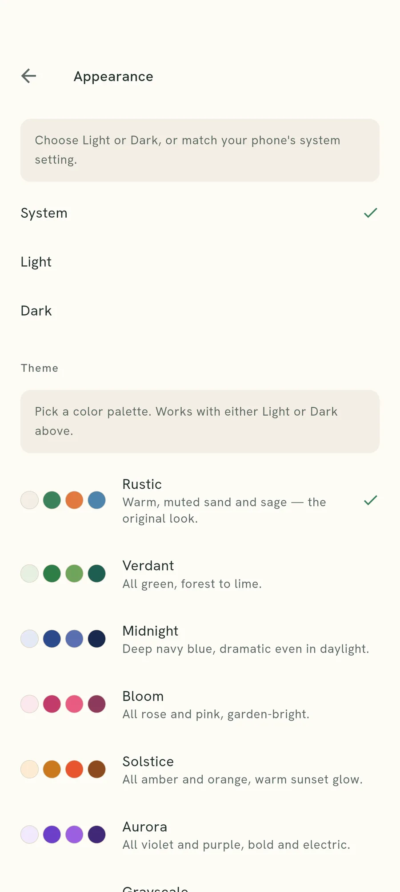
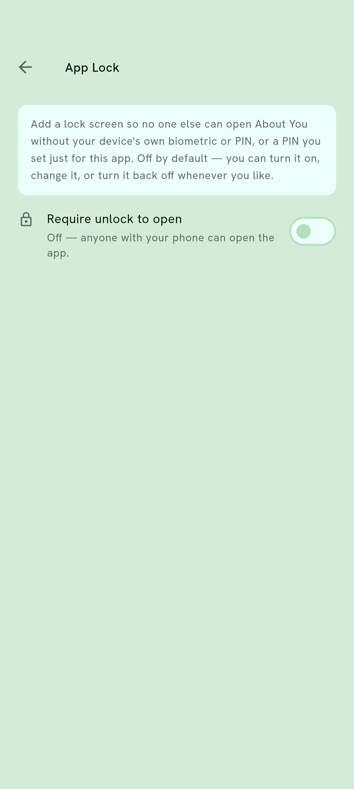
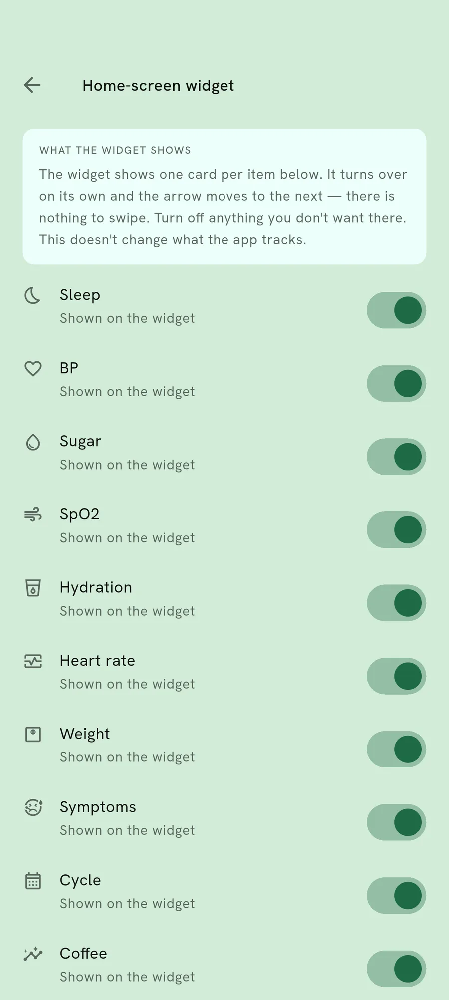

Making it yours
An app that bends to how you use it.
Colour, a lock, a square on your home screen, and which things you are asked about at all. None of it changes what the app does with what you record.

Four things you can set
Colour, the lock, the widget, and the list of things you track. Each is a preference. Nothing on this page is a feature you have to buy before the app is useful.
Eighteen palettes, three of them free
A new install opens on Clover, a clean white and green. Evergreen is the same green after dark. Monochrome is the third. The other fifteen are earned rather than bought.
Monochrome is free for a reason
Black, white and one accent, held to the widest contrast in the set. It is there for legibility rather than taste, so it is not something to earn. A phone with no connection still has to be readable.
A lock on the app itself
Your phone's own unlock, asked for again when the app opens. Useful when the phone is shared, or simply left on a table.

Why colour is not decoration here
Every palette is measured before it ships. Text has to clear a contrast floor on the exact surface it lands on, and no two palettes are allowed to resolve to the same ground.
That is why there are eighteen and not eighty. A palette that cannot be read is not a style, and a palette nobody can tell from another one is not a choice.
The lock is a different kind of decision. It guards the app on a phone somebody else is holding, which is a smaller problem than a stolen phone and a much more common one.
Setting each of them
Pick a palette and see it at once
The swatches show the real thing rather than a name. Choosing one changes the app as you look at it, and you can change back.
Put one number on the home screen
The widget shows a single thing at a time and moves between them with an arrow. Tapping it opens the app at that entry.

Choose what you are asked about
Turn a measurement off and it stops appearing. Nothing you already recorded is deleted by turning something off, and turning it back on shows the history again.